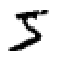

MNIST: Elastic Distortions
In this example we are going to use Augmentor.jl on the famous MNIST database of handwritten digits [MNIST1998] to reproduce the elastic distortions discussed in [SIMARD2003].
Note that the way Augmentor implements deformations is a little different than how it is described by the authors in the paper. This is for a couple of reasons, most notably that we want the parameters for our deformations to be intepended of the size of image it is applied on. As a consequence the parameter numbers specified in the paper are not 1-to-1 transferable to Augmentor.
Loading the MNIST Trainingset
In order to access and visualize the MNIST images we employ the help of two additional Julia packages.
Images.jl will provide us with the tool for working with image data in Julia.
MLDatasets.jl has an MNIST submodule that offers a convenience interface to read the MNIST database.
The function MNIST.traintensor returns the MNIST training images corresponding to the given indices as a multi-dimensional array. These images are stored in the native horizontal-major memory layout as a single floating point array, where all values are scaled to be between 0.0 and 1.0.
using Images, MLDatasets
train_tensor = MNIST.traintensor()
@show summary(train_tensor)summary(train_tensor) = "28×28×60000 Array{Float64,3}"This horizontal-major format is the standard way of utilizing this dataset for training machine learning models. In this tutorial, however, we are more interested in working with the MNIST images as actual Julia images in vertical-major layout, and as black digits on white background.
We can convert the "tensor" to a Colorant array using the provided function MNIST.convert2image.
train_images = MNIST.convert2image(train_tensor)
train_images[:,:,1] # show first image
Visualizing Distortion Effects
Before we apply a smoothed displacement field to our dataset and train a network, we should invest some time to come up with a decent set of hyper parameters for the operation. A useful tool for tasks like this is the package Interact.jl.
# These two package will provide us with the capabilities
# to perform interactive visualisations in a jupyter notebook
using Augmentor, Interact, Reactive
# The manipulate macro will turn the parameters of the
# loop into interactive widgets.
@manipulate for
unpaused = true,
ticks = fpswhen(signal(unpaused), 5.),
image_index = 1:100,
grid_size = 3:20,
scale = .1:.1:.5,
sigma = 1:5,
iterations = 1:6,
free_border = true
op = ElasticDistortion(grid_size, grid_size, # equal width & height
sigma = sigma,
scale = scale,
iter = iterations,
border = free_border)
augment(train_images[:, :, image_index], op)
endExecuting the code above in a Juypter notebook will result in the following interactive visualisation. You can now use the sliders to investigate the effects that different parameters have on the MNIST training set.
You should always use your training set to do this kind of visualisation (not the test test!). Otherwise you are likely to achieve overly optimistic (i.e. biased) results during training.

Congratulations! With just a few simple lines of code, you created a simple interactive tool to visualize your image augmentation pipeline. Once you found a set of parameters that you think are appropriate for your dataset you can go ahead and train your model.
References
LeCun, Yan, Corinna Cortes, Christopher J.C. Burges. "The MNIST database of handwritten digits" Website. 1998.
Simard, Patrice Y., David Steinkraus, and John C. Platt. "Best practices for convolutional neural networks applied to visual document analysis." ICDAR. Vol. 3. 2003.